Two sides, one game.
İki taraf, tek oyun.
The academy
Akademi
You do not read about security, you perform it. Each module drops you into its own virtual desktop with real looking tools: open the mail, inspect the log, follow the clue, make the call and see what changes. Guided teaching cards sit beside every task, so the concept is there the moment you need it.
Güvenliği okumuyorsun, yapıyorsun. Her modül seni gerçekçi araçlarla dolu kendi sanal masaüstüne bırakır: postayı aç, kaydı incele, ipucunu izle, kararı ver ve neyin değiştiğini gör. Her görevin yanında yol gösteren ders kartları durur; kavram tam ihtiyaç duyduğun anda orada.
The full curriculum is 25 modules. The first ones are playable now; the rest arrive through Early Access updates.Müfredatın tamamı 25 modül. İlkleri şimdi oynanabiliyor; kalanı Erken Erişim güncellemeleriyle geliyor.
The Dark Net
Karanlık Ağ
A separate online layer with its own desktop, browser and file system. Create an operator, take contracts, scan fictional targets and break in by chaining puzzle tools, one step feeding the next. Then the other side: rivals come for your machine, and you build the walls, answer the alarm and follow the trail they leave behind.
Kendi masaüstü, tarayıcısı ve dosya sistemi olan ayrı bir çevrimiçi katman. Bir operatör yarat, sözleşme al, kurgusal hedefleri tara ve bulmaca araçlarını birbirine zincirleyerek içeri sız; her adım bir sonrakini besler. Sonra öbür taraf: rakipler senin makinene gelir, sen de duvarları örer, alarma yetişir ve bıraktıkları izi sürersin.
Every IP, account and target in the Dark Net is fictional and exists only inside the game.Karanlık Ağ'daki her IP, hesap ve hedef kurgudur; yalnızca oyunun içinde var.
Eight moves, one night.
Sekiz hamle, tek gece.
Frames from the Dark Net trailer. Pick a step, or let it play.
Kareler Karanlık Ağ fragmanından. Bir adım seç ya da kendi aksın.
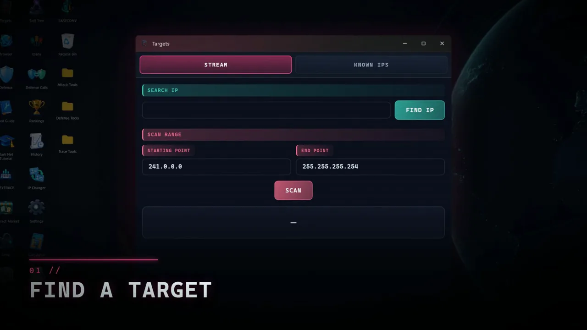
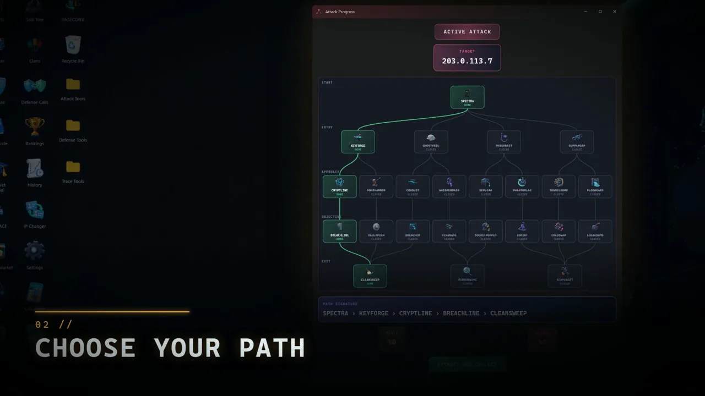
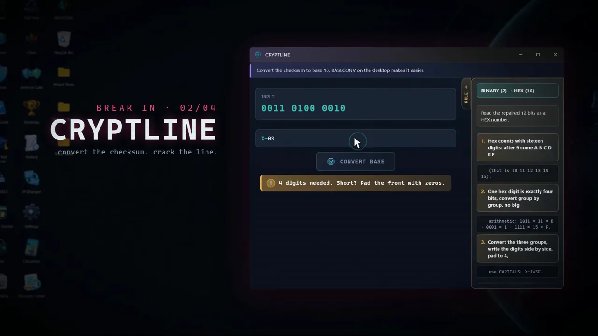
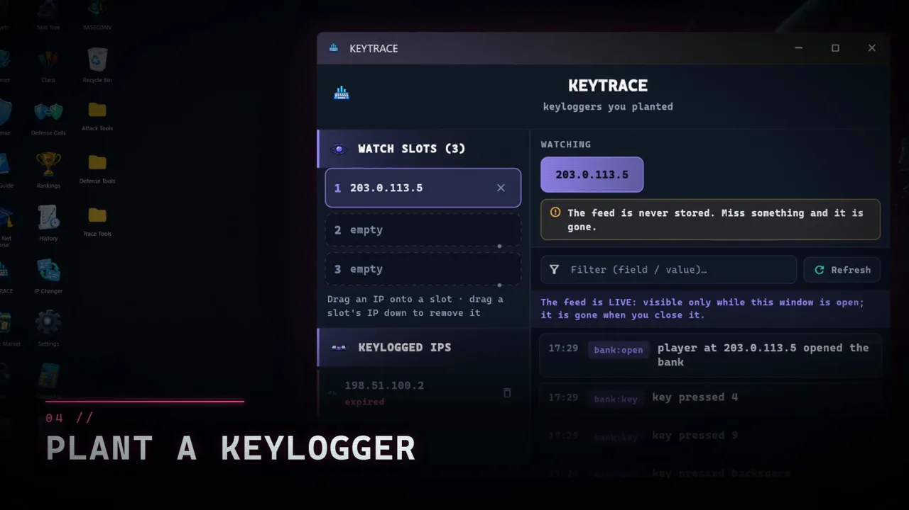
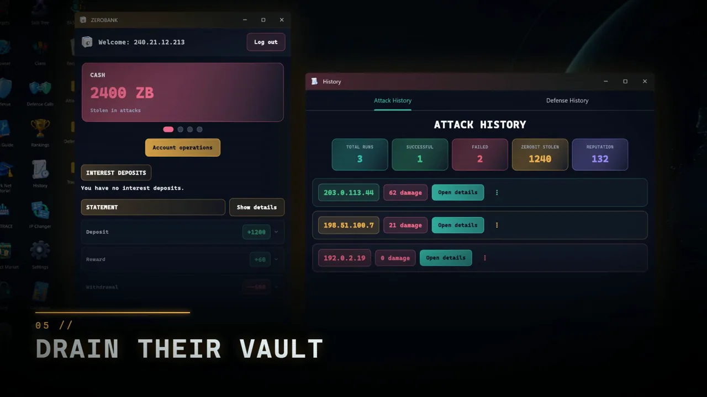
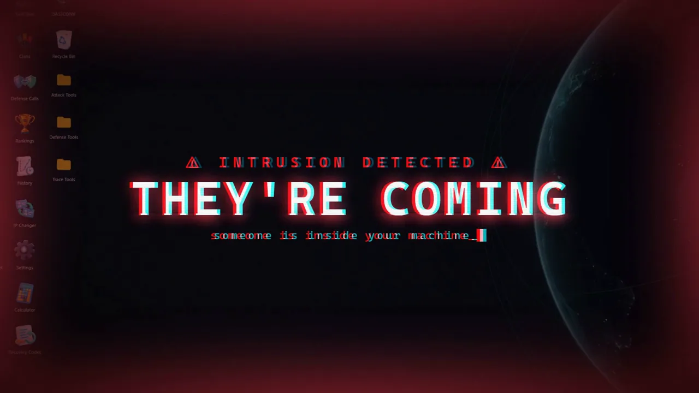
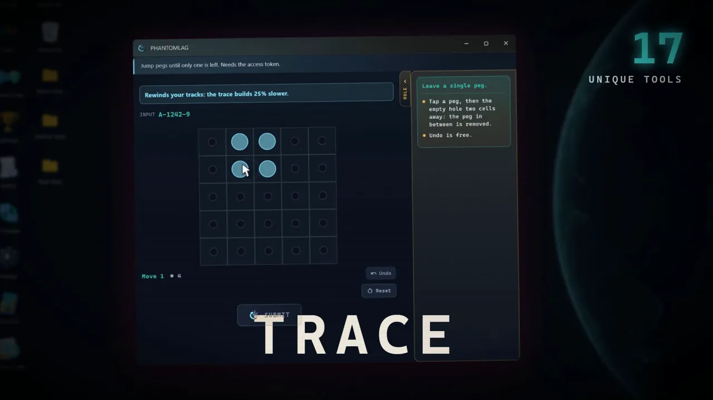
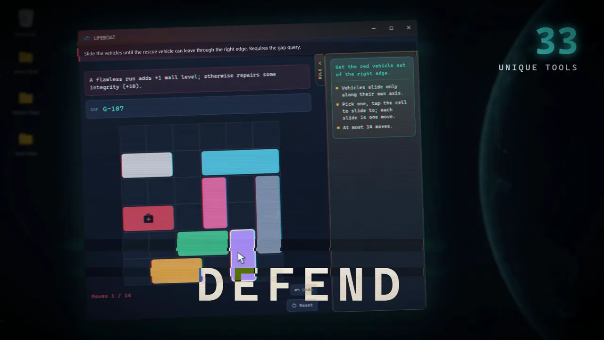
Scan the network and pick a fictional operator’s machine to go after.Ağı tara ve peşine düşeceğin kurgusal bir operatörün makinesini seç.
Every target opens a branching route. Decide which tools you will chain, and in what order.Her hedef dallanan bir yol açar. Hangi araçları hangi sırayla zincirleyeceğine sen karar verirsin.
Each tool is a puzzle of its own: crack the checksum in CRYPTLINE, drill under the firewall in TUNNELBORE.Her araç kendi başına bir bulmaca: CRYPTLINE’da sağlamayı çöz, TUNNELBORE’la güvenlik duvarının altından geç.
KEYTRACE watches what the target types, for as long as the slot stays open.KEYTRACE, yuva açık kaldığı sürece hedefin ne yazdığını izler.
Take their ZeroBit. The attack history keeps a record of every hit.ZeroBit’lerini al. Saldırı geçmişi her vuruşun kaydını tutar.
Intrusion detected. Someone is inside your machine now.İzinsiz giriş tespit edildi. Şimdi biri senin makinende.
Follow the trail back through logs and hops while the evidence is still fresh.Delil tazeyken kayıtlar ve atlamalar üzerinden izi geriye doğru sür.
Answer with defence puzzles of your own, and make the next attempt cost more.Kendi savunma bulmacalarınla cevap ver ve bir sonraki denemeyi daha pahalı hâle getir.
Deep systems, real depth.
Derin sistemler, gerçek derinlik.
No fake terminals and no hand holding. Every tool is a puzzle, and every move has a cost.
Sahte terminal yok, el tutma yok. Her araç bir bulmaca, her hamlenin bir bedeli var.
Attack chains
Saldırı zincirleri
Find a target, choose your path and break in tool by tool. Copy what one tool gives you into the next. Give up, run out of time or fail too often and your reputation pays.
Hedefi bul, yolunu seç ve araç araç içeri gir. Bir aracın verdiğini bir sonrakine taşı. Vazgeçersen, süre dolarsa ya da çok hata yaparsan bedelini itibarın öder.
Defence apps
Savunma uygulamaları
Firewall, SENTINEL SIEM, process guard and honeypot challenges. When an intruder lands, you answer with puzzles of your own.
Güvenlik duvarı, SENTINEL SIEM, süreç koruması ve bal küpü görevleri. İçeri biri girdiğinde sen de kendi bulmacalarınla cevap verirsin.
Keyloggers and traces
Keylogger ve iz sürme
Plant a keylogger and watch what a target types. Hit back by following the attacker through logs and network hops while the evidence is still fresh.
Keylogger yerleştir, hedefin ne yazdığını izle. Delil tazeyken kayıtlar ve ağ atlamaları üzerinden saldırganın izini sürerek karşılık ver.
ZeroBit economy
ZeroBit ekonomisi
A contract market, ZeroBank with savings and escrow, a shop and vaults worth draining. Grow your credits and guard your own.
Sözleşme pazarı, birikim ve emanet hesaplarıyla ZeroBank, mağaza ve boşaltmaya değer kasalar. Kredini büyüt, kendi kasanı koru.
Clans and forums
Klanlar ve forumlar
Create or join a clan, see who is online, talk in the in game forums and climb daily and weekly leaderboards. Invite friends straight from Steam.
Klan kur ya da birine katıl, kimin çevrimiçi olduğunu gör, oyun içi forumlarda konuş, günlük ve haftalık sıralamalarda yüksel. Arkadaşlarını doğrudan Steam'den davet et.
Skill tree and ranks
Yetenek ağacı ve rütbeler
Earn XP and reputation, unlock ranks, badges, avatars and cosmetics, and shape your operator across a branching skill tree.
XP ve itibar kazan; rütbe, rozet, avatar ve kozmetik aç, operatörünü dallanan bir yetenek ağacında şekillendir.
NEONVAULT and ZEROPLAY
NEONVAULT ve ZEROPLAY
Blackjack, Texas Hold'em and roulette at shared online tables, plus an arcade of small games. In game currency only: no real money, nothing to buy.
Ortak çevrimiçi masalarda blackjack, Texas Hold'em ve rulet, yanında küçük oyunlarla dolu bir arcade. Yalnız oyun içi para: gerçek para yok, satın alınacak bir şey yok.
Built for Steam
Steam için yapıldı
Steam Achievements, Steam Cloud saves and Family Sharing. Your Steam language opens the game in that language when it is supported.
Steam Başarımları, Steam Cloud kayıtları ve Aile Paylaşımı. Steam dilin destekleniyorsa oyun o dilde açılır.
Safe by design
Tasarımdan güvenli
Nothing here points at the real world. Targets, IPs and operators are fictional, and the skills are taught for defence and understanding.
Buradaki hiçbir şey gerçek dünyayı hedef almaz. Hedefler, IP'ler ve operatörler kurgudur; beceriler savunma ve anlamak için öğretilir.
There is another network.
Başka bir ağ daha var.
The Dark Net trailer: find a target, choose your path, break in, and then watch them come for you.
Karanlık Ağ fragmanı: hedefi bul, yolunu seç, içeri gir; sonra onların sana gelişini izle.
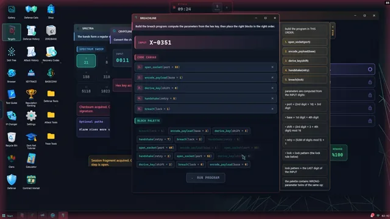
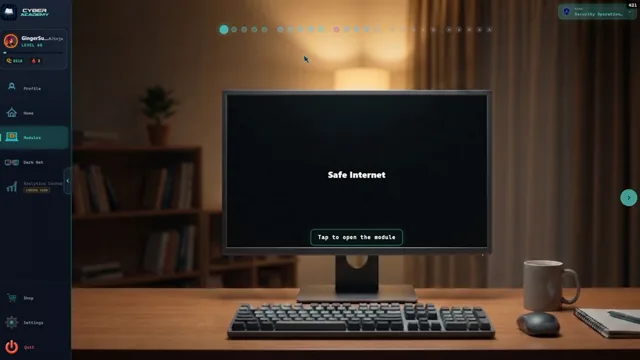
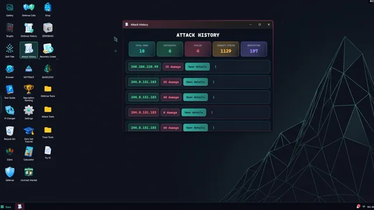
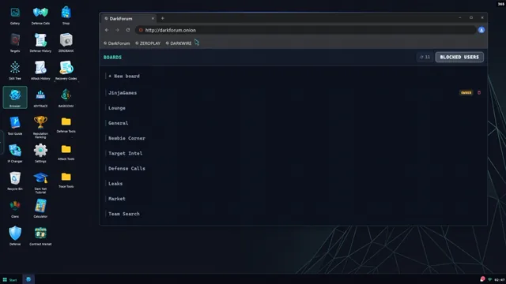
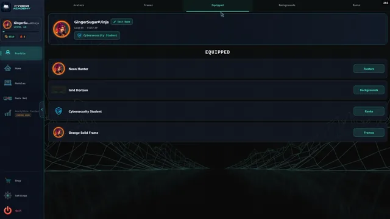
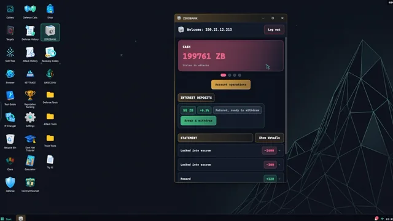
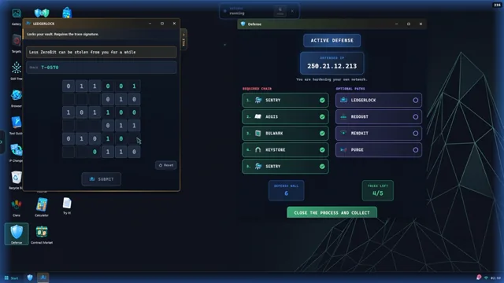
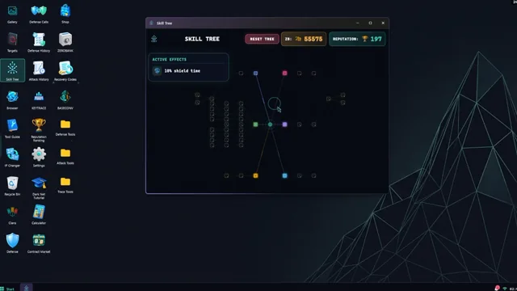
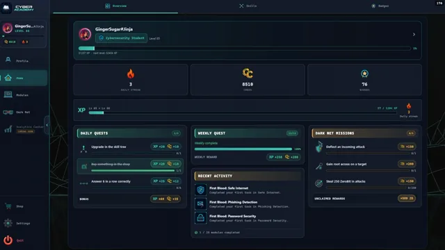
What is in, what is coming.
Neler var, neler geliyor.
In the game todayBugün oyunda
- The core loop: Academy modules, then the Dark Net with attack, defence and tracing.Temel döngü: Akademi modülleri, ardından saldırı, savunma ve iz sürmeyle Karanlık Ağ.
- The first Academy modules, with story, quests, mentor dialogue and badges.Hikâye, görev, mentor diyaloğu ve rozetleriyle ilk Akademi modülleri.
- Clans, forums, the contract market, ZeroBank, NEONVAULT tables and the ZEROPLAY arcade.Klanlar, forumlar, sözleşme pazarı, ZeroBank, NEONVAULT masaları ve ZEROPLAY arcade.
- 25 interface languages and Steam Cloud saves.25 arayüz dili ve Steam Cloud kayıtları.
On the wayYolda
- New modules on a regular cadence, toward the full curriculum of 25. This is the top priority.Düzenli aralıklarla yeni modüller, 25 modüllük müfredatın tamamına doğru. En büyük öncelik bu.
- Deeper Dark Net systems and more shared online play.Daha derin Karanlık Ağ sistemleri ve daha fazla ortak çevrimiçi oyun.
- Bug fixes, balance and readability, driven by what players report.Oyuncuların bildirdiklerine göre hata düzeltmeleri, denge ve okunabilirlik.
- The price is not planned to change after Early Access.Erken Erişim sonrasında fiyatın değişmesi planlanmıyor.
Enter the academy today.
Akademiye bugün gir.
Cyber Academy is playable now in Steam Early Access. Your feedback in the Steam discussions shapes what comes next.
Cyber Academy şu anda Steam Erken Erişimde oynanabiliyor. Steam tartışmalarına yazdıkların, sırada ne geleceğini belirliyor.
Get it on SteamSteam'de al →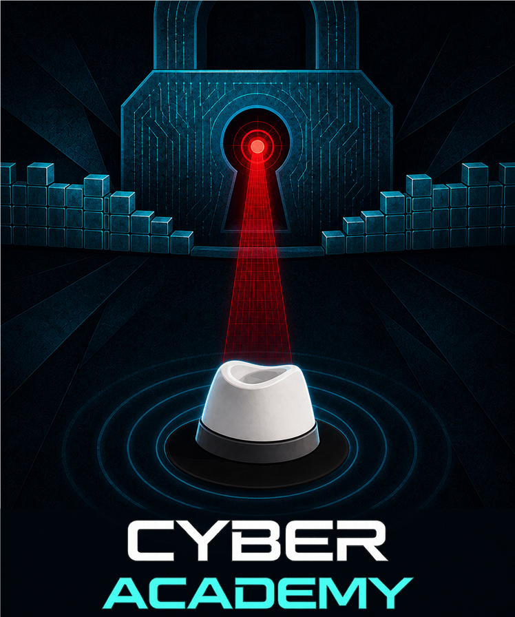